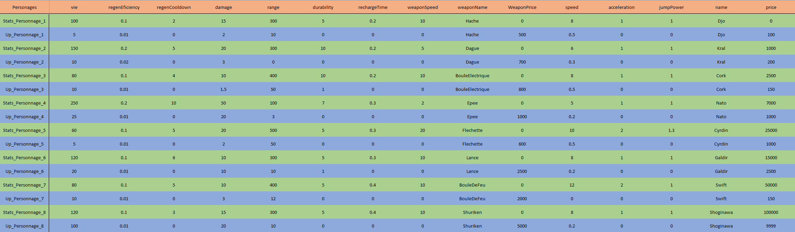

Documentation
Introduction
SpaceShooter est un jeu de tir en 2D en vue de face. Il est développé en python et utilise le module EZ, qui a pour but de simplifier la librairie pygame. EZ était imposé au projet dans le cadre de l'enseignement de NSI.
Installation
Si vous ne possédez pas python, ou si vous possédez une version inférieure à python3, il vous faudra l'installer.
Si vous ne possédez pas pygame:
$ pip install pygame
Si vous souhaitez utiliser l'outil décomposeur de gif, il vous faudra aussi le module Pillow:
$ pip install Pillow
Utilisation
Démarrage
Pour démarrer le jeu, il suffit de lancer le script main.py dans le terminal. Le fichier se trouve dans le dossier sources.
Contrôles
Dans les menus
- Echap: revenir au menu précédent
- Click Gauche: Pour naviguer dans les menus
En Jeu
- Click gauche/ Entrer: Tirer
- q / Flèche gauche: Bouger le personnage vers la gauche
- d / Flèche droite: Bouger le personnage vers la droite
- Espace: Sauter
- a: Utiliser l'équipement Potion
- e: Utiliser l'équipement Grenade
- z: Réparer l'équipement Bouclier
- Echap: accéder au Menu en Jeu
Crédits
- Programmation : Heilmann Jonathan
- Graphisme / Equilibrage : Schmitt Nicolas
- Autres
Fonctionnement
Comment le jeu est-il codé ? Comment se déplace le joueur ? Comment les monstres se déplacent-ils ? Comment les dégâts sont-ils gérés ? Ou encore, comment marche la navigation au sein des menus ? ...
Dans cette partie nous verrons donc de quelle manière le jeu est construit.
Introduction
SpaceShooter est codé en grande partie en programation orientée objet. Il est composé de plusieurs classes principales telles que :
- Joueur : Gère les actions du joueur
- Game : Gère le déplacement du fond
- Monstre : Gère les actions d'un monstre
- Arme : Gère les armes
Ces classes sont ensuite utilisées dans InterfaceDynamique.py qui recupère les évènements et réalise les actions à l'aide des classes citées précedemment ou des fonctions reparties dans l'ensemble des fichiers python.
Le Joueur
Déplacement du Joueur
Les déplacements du joueur sont illustrés par le déplacement du fond ce qui permet au joueur de rester au centre de l'écran.
Le décalage du fond est enregistré dans une variable self.decal, qui varie en fonction des informations transmises par InterfaceDynamique.py.
De nombreux éléments peuvent influencer le déplacement du fond:
- La vitesse du joueur
- L'accélération du joueur
- Si le joueur est dans les airs
- Si le joueur est en contact avec un objet comme une bordure
cf : l.621 Menu.py
Saut du Joueur
Le saut lui aussi varie en fonction du personnage. Ce qui permet une diversité entre les personnages.
Le début du saut est généré par la remise du temps de saut au temps actuel.
def timer_saut(self): """Prend les seconde du debut du saut""" self.timeSaut = EZ.clock()
Ce temps est ensuite utilisé pour calculer la position y du joueur en fonction du temps passer depuis le début du saut.
def effet_saut(self): """Trajectoire du saut du joueur""" time = EZ.clock() - self.timeSaut if self.y < self.y_sol or time < 0.1: self.y = self.y_sol - (self.stats["jumpPower"] * 100)* (self.stats["speed"] * time - ((1 + self.stats["speed"]/50)**2) * 0.5 * 9.81 * time**2) else: self.move_info["saut"] = False self.y = self.y_sol
Animation du Joueur
L'animation du joueur est générée par une suite d'images. Ces images sont stockées dans plusieurs tableaux suivant la direction du joueur, générés au lancement du jeu et actualisés à chaque changement de personnage.
self.chargesRight = [EZ.transforme_image(EZ.charge_image("FichiersJeu\Interface\Entites\Items\Personnages\Perso1\Perso1A7.png"), 0, 3),EZ.transforme_image(EZ.charge_image("FichiersJeu\Interface\Entites\Items\Personnages\Perso1\Perso1A8.png"), 0, 3),EZ.transforme_image(EZ.charge_image("FichiersJeu\Interface\Entites\Items\Personnages\Perso1\Perso1A9.png"), 0, 3)] self.chargesLeft = [EZ.transforme_image(EZ.charge_image("FichiersJeu\Interface\Entites\Items\Personnages\Perso1\Perso1A4.png"), 0, 3),EZ.transforme_image(EZ.charge_image("FichiersJeu\Interface\Entites\Items\Personnages\Perso1\Perso1A5.png"), 0, 3),EZ.transforme_image(EZ.charge_image("FichiersJeu\Interface\Entites\Items\Personnages\Perso1\Perso1A6.png"), 0, 3)]
Ces images défilent ensuite plus ou moins vite en fonction de la vitesse du joueur.
Arme du Joueur
Lorsque le joueur tire, son arme est envoyée dans la direction dans laquelle il regarde ou en direction du monstre le plus proche ( cf: l.656 InterfaceDynamique.py)
L'arme, comme annoncé dans l'introduction, est gérée par la classe Arme au même moment que le personnage. La classe récupère les informations du joueur au moment du tir. Pour ensuite déplacer et animer l'arme.
def Setup(self, x, y, direction, inertie = 0): """Charge les info au moment du lancement de l'attack Args: x (int): cordonner x du joueur y (int): coordonne y du joueur direction (str): direction du joueur / dans le quel va aller l'arme inertie (float): vitesse du jouer """ self.y = y + self.hauteurTir self.durability[1] = self.durability[0] # repart l'arme self.Break = False self.direction = direction self.inertie = inertie self.damage["damage"] = self.damage["basicDamage"] * (1+abs(inertie)/5) if direction == "right": self.range[1] = self.range[0] * (1 + inertie/10) # donne une range plus grand quand le joueur court / give a range bigger when the player is running self.RotationSpeed[1] = 0 if self.RotationSpeed[0] != 0 else 180 # Rotation de l'arme si l'arme a une rotation / rotate the weapon if the weapon has a rotation self.xSetup = x self.x = x else: self.range[1] = self.range[0] * (1 - inertie/10) # donne une range plus grand quand le joueur cour / give a range bigger when the player is running self.RotationSpeed[1] = -90 if self.RotationSpeed[0] != 0 else 0 # Rotation de l'arme si l'arme a une rotation / rotate the weapon if the weapon has a rotation self.xSetup = x - self.hitbox[0] # position de l'arme - self.hitbox[0] pour que l'arme soit a gauche du joueur / position of the weapon - self.hitbox[0] to make the weapon to the left of the player self.x = x - self.hitbox[0] # ^^^^^^^^
Son déplacement et sa rotation sont gérés par :
def move(self, vitesse, vitesseFond, direction): """Deplace l'arme Args: vitesse (int): vitesse de l'arme definie dans CaracteristiqueJoueur vitesseFond (float): vitesse de deplacement du fond direction (str): direction de l'arme """ if direction == "right": self.x += vitesse - vitesseFond + self.inertie self.RotationSpeed[1] -= self.RotationSpeed[0] self.charges = EZ.transforme_image(self.chargesB, self.RotationSpeed[1], 1) else: self.x -= vitesse + vitesseFond - self.inertie self.RotationSpeed[1] += self.RotationSpeed[0] self.charges = EZ.transforme_image(self.chargesB, self.RotationSpeed[1], 1) self.xSetup -= vitesseFond
Nous verrons par la suite comment elle inflige des dégâts.
Statistique du Joueur
Chaque personnage a des statistiques différentes. Certains se déplacent plus vite, d'autres ont plus de vie, d'autres font plus de dégâts, d'autres ont une meilleure cadence de tir... Ces statistiques sont définies dans le fichier StatsPersonnage.csv, on peut aussi y voir les bonus d'amélioration de statistiques.

Cela permet de rendre le jeu plus varié, et ainsi d'améliorer l'expérience du joueur.
Monstres
Génération des monstres
Les monstres sont générés en début de vague. Leur mode de génération dépend du mode de jeu choisi.
-
Mode Campagne :
Les monstres sont générés en fonction d'un fichier csv propre à chaque map.
cf: Dossier InfoWave
Chaque fichier contient les informations suivantes pour chaque vague:
- Nom des monstres à générer
- combien de fois chaque monstre doit être généré
- Le type du monstre ("COMMON", "HEAL", "SHOOTER", ...)
-
Mode Infini :
Les monstres sont générés aléatoirement d'après le numéro de vague et la map choisie. Les monstres disponibles dans chaque map sont donnés dans le fichier
AllMobe.csv
Les informations transmises sont traitées dans le fichier InterfaceDynamique.py et stockées dans une liste qui est ensuite utilisée pour accéder aux monstres.
Le déplacement des monstres
Les monstres se déplacent en direction du joueur, la position du joueur leur est transmise au moment de leur génération. Pour rappel le joueur ne bouge pas, c'est le fond qui bouge.
def move(self, vitesseFond): """Deplace le monstre en fonction de la position du joueur Args: vitesseFond (float): deplacement du fond """ if self.x < self.xPlayer - 20: # -20 : evite que le montres reste sur le joueur est fait plein de droit gauche self.move_info["right"] = True self.move_info["left"] = False elif self.x > self.xPlayer + 20: # +20: Meme raison self.move_info["left"] = True self.move_info["right"] = False
Les effets des monstres
Les monstres comme le joueur ont un effet de vie, grace à une succession d'images.
def __charge(self,nb_image): """Charges les image du monstre et definit sa taille""" self.chargesRight = [EZ.charge_image(f"FichiersJeu/Interface/Entites/Items/Monstres/{self.name}/base/{self.name}_{image}.png") for image in range(nb_image)] self.chargesLeft = [EZ.charge_image(f"FichiersJeu/Interface/Entites/Items/Monstres/{self.name}/reverse/{self.name}_reverse_{image}.png") for image in range(nb_image)] self.hitbox = [EZ.dimension(self.chargesRight[0])[0], EZ.dimension(self.chargesRight[0])[1]]
Note : La suite d'images des monstre est à l'origine un gif.
Les fonctions moveEffectRight et moveEffectLeft sont utilisées pour faire défiler les images.
Cf : l.90
Monstre.py
Gestion des dégâts
Les hitbox
Toutes les entités du jeu ont une hitbox. Celle-ci est définie en fonction de la taille de l'objet.

Les dégâts
Des dégâts sont infligés à une entité, si celle-ci est touchée par une autre qui a pour but de l'attaquer.
def VerifDegat(monstres, armesJoueur, Joueur, Shooters = 0): """ function to check if the player is hit by the monsters and if monstre is hit by the player Fonction qui compare la position des different ellement et mets des degat si nessesaire Args: monstres(list): Liste de tout les monstre en vie armes(list): Arme du joueur """ mobKill = 0 # monstre kill in function / monstre tué dans la fonction # Arme sur monstre for i,monstre in enumerate(monstres): for arme in armesJoueur: if Verifzone(monstre, arme["arme"]): monstre.domage(arme["arme"].damage["damage"]) arme["arme"].use() if monstre.death(): monstres.pop(i) mobKill += 1 # Monstres sur Joueur if Verifzone(Joueur, monstre): if monstre.attaque(): Joueur.domage(monstre.stats["damage"]) # Inflige les degat au joueur for shooter in Shooters: if Verifzone(Joueur, shooter.arme["arme"]): Joueur.domage(shooter.arme["arme"].damage["damage"]) shooter.arme["arme"].use() if Joueur.death(): return monstres, False, mobKill return monstres, True, mobKill
Les équipements
Les équipements sont des objets qui peuvent être achetés par le joueur dans le menu équipements. Il en existe trois: Bouclier, Grenade et Potion de soin. Ils peuvent chacun être améliorés dans différents aspects de façon indépendante, attention tout de même au prix de l'amélioration qui est défini par le nombre d'améliorations que le joueur a effectué sur l'objet ainsi que le prix d'achat de l'objet.

Le Bouclier
Le bouclier permet au joueur d'annuler les dégâts des monstres pour un certain nombres de coups. Il se répare automatiquement quand il est cassé, mais aussi en appuyant sur la touche "z" du clavier. Le bouclier peut être acheté pour la somme de 10 000 pièces d'or, et peut être amélioré en résistance et temps de réparation.
La Grenade
La grenade est un objet qui permet au joueur de mettre un grand nombre de dégâts à plusieurs monstres dans une zone. Elle est réutilisable après un temps donné. Elle est achetable pour la somme de 2500 pièces d'or, et peut être améliorée en temps de réparation, dégâts et en rayon de zone d'explosion.
La grenade est particulièrement utile pour les monstres qui sont trop nombreux pour être attaqués normalement, mais aussi pour les montres que l'arme du personnage ne touche pas. Sans oublier que son grand nombre de dégâts est aussi utile contre les boss.
Pour lancer la grenade il faut appuyer sur la touche "e" du clavier.
La Potion de soin
La potion de soin est un objet qui permet au joueur de soigner son personnage. Elle est achetable pour la somme de 5000 pièces d'or, et peut être améliorée en temps de remplissage et en soin reçus.
Pour utiliser la potion il faut appuyer sur la touche "a" du clavier.
Les Déplacements dans les menus
Menu Fixe
Dans les menus fixes (Menu ou les boutons ne se déplacent pas sur l'écran), les coordonnées des boutons restent constantes. Ainsi il suffit de récupérer les coordonnées de la souris si un click gauche est effectué.
EZ permet de le faire simplement :
evenement = EZ.recupere_evenement() elif evenement == "SOURIS_BOUTON_GAUCHE_ENFONCE":
Il reste plus qu'a verifier si le click était sur un bouton, pour sa quelques conditions et le tour est joué.
if 435 < EZ.souris_x() < 845 and 595 < EZ.souris_y() < 710: # Bouton 'Nom du bouton'
Sans oublier de renvoyer vers l'interface demander. Ex: menuShop()
Menu Slide
Les menus Slide(Translation sur un axe), sont des menus où l'utilisateur a la posibilité de naviguer de droite à gauche. Les coordonnées des boutons sont donc variables.
Ex: Menu de sélection des personnages

L'affichage des menus Slide est géré par la classe mère SlideMenu cf: l.196 Menu.py.
Le déplacement au sein du menu est géré de la manière suivante cf: 562 InterfaceDynamique.py:
x = 100 # Corespond au décalage du menu vers la droite xLast = 0 # dernier coordonner x de la souris click = False # True si le click est enfoncé sinon False while True: evenement = EZ.recupere_evenement() elif evenement == "SOURIS_BOUTON_GAUCHE_ENFONCE": click = True xLast = EZ.souris_x() elif evenement == "SOURIS_BOUTON_GAUCHE_RELACHE": click = False if click and evenement == "SOURIS_MOUVEMENT": decalage = xLast - EZ.souris_x() if -MenuShopUpgradeWeaponSlide.largeurAllCadre + LONGEUR - 100 + decalage <= x <= 100 + decalage: x -= decalage xLast = EZ.souris_x()
Ainsi pour savoir sur quel bouton l'utilisateur a cliqué, on ajoute x (le décalage du menu) au coordonnées des extrémités du bouton. Et comme pour les menus fixes on utilise de simples conditions, à la seule différence que pour les menus slide les coordonnées des boutons sont calculées, en effet tout les boutons ont la même taille, et sont placés les uns à côté des autres.
xSouris = EZ.souris_x() for cadre in range(len(MenuShopUpgradeWeaponSlide.chargesWeapons)): if cadre * MenuShopUpgradeWeaponSlide.largeurCadrePlusEspace + x < xSouris < cadre * MenuShopUpgradeWeaponSlide.largeurCadrePlusEspace + x + MenuShopUpgradeWeaponSlide.largeurCadre: # check if the click is in a box / verifie si le click est dans un cadre leave = menuShopUpgradeWeapon(gold, int(MenuShopUpgradeWeaponSlide.getListPersonnage()[cadre].split("Personnage")[-1])-1)
Menu Carte (Slide 2D)
Les Menus Carte fonctionnent de la même manière que les menus silde, à la seule différence qu'ils enregistrent aussi le déplacement y, de la manière que font les menus slide pour les déplacements en x.
Sauvegarde des informations
Toutes les informations de l'avancée dans le jeu, sont stockées dans le fichier InfoGen.csv. Ces informations sont ensuite lues et modifiées par les fonctions des fichiers ReadInfo.py et SaveInfo.py qui utilisent le module csv de python.
Lecture des informations
Comme dit au-dessus les informations du fichier son récupérées grâce aux fonctions du fichier ReadInfo.py
Exemple avec la fonction ReadInventaire, qui utilise la méthode reader et enregistre les informations des personnages ligne par ligne dans un dictionnaire.
def ReadInventaire(): """Read the level of the Cracters and Caracters Weapons li les niveau des personnage et des armes""" inventaire = {} with open("FichiersJeu\InfoJoueur\InfoGen.csv", 'r', newline='') as csvInfo: reader = csv.reader(csvInfo, delimiter=':') for row in reader: if "Personnage" in row[0]: inventaire.update({row[0]:[ True if row[1] == "True" else False, int(row[2]), int(row[3])]}) return inventaire
Modification des informations
Comme dit au-dessus les informations du fichier son récupérées grâce aux fonctions du fichier SaveInfo.py
Le module csv ne permet pas la modification d'une ligne, il faut donc enregistrer l'ensemble du fichier dans une liste et modifier les informations souhaitées.
with open("FichiersJeu\InfoJoueur\InfoGen.csv", 'r') as csvInfo: reader = csv.reader(csvInfo, delimiter=':') File = [] for row in reader: if row[0] == equipement: row[1] = row[1].replace(row[1], "True") File.append(row)
Ensuite il suffit de réécrire l'ensemble du fichier csv, à partir de la liste enregistrée précédemment.
with open("FichiersJeu\InfoJoueur\InfoGen.csv", 'w', newline='') as csvInfo: Writer = csv.writer(csvInfo, delimiter=':') for row in File: Writer.writerow(row)
Son
Le jeu est accompagné de son, pour améliorer l'immersion dans le jeu. Cela peut être de la musique, ou encore des bruitages. La musique peut être desactivée, à l'aide d'un bouton dans le menu.
Le choix du joueur est comme pour les pièces d'or enregistré dans le fichier infoGen.csv.
Bruitages
EZ permet aussi de jouer des bruitages, il faut utiliser la fonction joue_son() pour cela. Sans oublier de charger le fichier son auparavant avec la fonction charge_son().
Exemple :
son = charge_son("FichiersSon\Bruitages\Bruitage.wav") joue_son(son)
Musique
Comme pour les bruitages pour jouer de la musique on utilise le module EZ. On utilise respectivement les fonctions charge_musique() et musique_on() pour charger et jouer la musique.
Pour stopper la musique on utilise musique_pause(), pour la reprendre musique_fin_pause() et pour modifier le volume musique_volume().
Exemple:
musique = charge_musique("FichiersSon\Musique\Musique.wav") musique_on() musique_volume(0.5) musique_pause() musique_fin_pause() musique_volume(1)